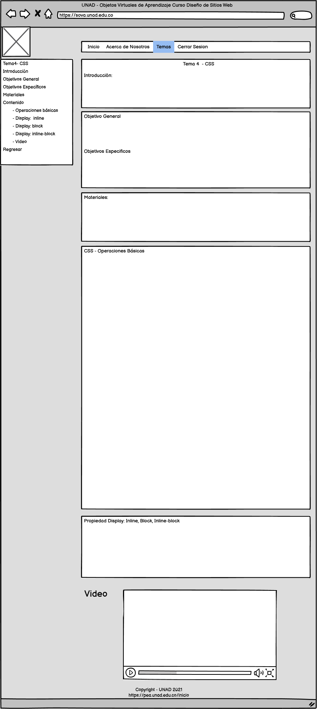

Contenido:
Las propiedades básicas de CSS son las siguientes: Bordes,Contorno,Cursor,Dimensiones,Enlaces,Fondo,Listas,Márgenes,Relleno,Tablas,Texto y fuentes
A continuación damos una descripción resumida de cada una de ellas
Bordes
Las principales propiedades CSS que nos permitirán configurar el borde de los elementos HTML son: border-width (ancho del borde), border-style (estilo del borde) y border-color (color del borde).
Contorno
El contorno de un elemento HTML no es lo mismo que el borde y tampoco forma parte del elemento en sí, aunque también podremos configurarlo usando las siguientes propiedades CSS:
- outline-color: color del contorno
- outline-style: estilo del contorno, pudiendo tener uno de los siguientes valores dotted, dashed, solid, double, groove, none, ridge, inset, outset.
- outline-width: ancho del contorno, pudiendo indicarse su valor en píxels o con thin, medium, thick
También podemos usar la propiedad outline con la cual podemos establecer todas las configuraciones anteriores en una sola línea manteniendo el siguiente orden: color, estilo, grosor.
Cursor
Con la propiedad cursor es posible cambiar el tipo de cursor del ratón al pasarlo sobre un elemento, pudiendo asignársele uno de los siguientes valores:crosshair, default, pointer, move, e-resize, ne-resize, nw-resize, n-resize, se-resize, sw-resize, s-resize, w-resize, text, wait, help.
Dimensiones
Para definir el alto de un elemento HTML se usa la propiedad height, y width para configurar el ancho. También podemos indicar un ancho y alto mínimos con min-width y min-height, así como un ancho y alto máximos con max-width y max-height.
Enlaces
Para configurar el aspecto visual de losenlaces podemos usar cualquier propiedad CSS, como color, font-family, etc.
Asimismo, para definir el color de un enlace dependiendo de sus diferentes estados podemos usar:
- a:link: enlace no visitado
- a:visited: enlace visitado.
- a:hover: al situar el cursor del ratón encima del enlace
- a:active: enlace seleccionado
IMPORTANTE: si configuramos varios aspectos de los enlaces hemos de seguir el siguiente orden:
- a:hover debe definirse después de a:link y a:visited
- a:active debe definirse después de a:hover
Fondo (background)
Con la propiedad background-color podemos definir un color de fondo para un elemento HTML (indicando el color por su nombre, o en formato hexadecimal o RGB). También podemos utilizar las siguientes propiedades referentes a imágenes:
- background-image: Permite establecer una imagen de fondo
- background-repeat: Indica cómo se repetirá la imagen (por defecto se repetirá ocupando todo el ancho y alto del elemento).
Puede tomar como valor repeat-x (se repetirá horizontalmente), repeat-y (se repetirá verticalmente) o no-repeat (se mostrará una sola vez)
- background-position:Indica la posición en la que debe mostrarse la imagen respecto al elemento HTML en que se encuentra.
Puede indicarse principalmente estableciendo la posición horizontal y vertical en píxels (siendo '0px 0px' la esquina superior izquierda), porcentajes (siendo '0% 0%' la esquina superior izquierda) o bien usando las palabras: left top, left center, left bottom, right top, right center, right bottom, center top, center center o center bottom.
- background: permite definir todas las propiedades anteriores en una sola línea
Listas
Las principales propiedades CSS que podemos usar para configurar una lista son:
- list-style-image: Seleccionar una imagen como marcador de cada elemento de la lista
- list-type-position: Indica si el símbolo o imagen en los elementos de la lista debe mostrarse dentro o fuera del flujo de su contenido.
Principalmente puede tener como valor: inside (el símbolo se mostrará en el flujo de contenido de la lista, con lo que se insertará una tabulación extra) o outside (el símbolo se mostrará fuera del flujo de contenido).
- list-style-type:
Definir el estilo en que será mostrado cada elemento. Algunos de los valores que pueden asignársele son:
- circle: círculos
- decimal: números enteros
- decimal-leading-zero: números, rellenando con ceros a la izquierda (01,02,03,04,05...)
- disc: mostrará un círculo con un relleno
- lower-alpha: letras en minúsculas (a,b,c,d,e...)
- lower-roman: números romanos usando caracteres en minúsculas (i, ii, iii, iv, v...)
- none: ningún simbolo o caracter
- square: muestra un cuadradito
- upper-alpha: letras en mayúscula (A,B,C,D,E...)
- upper-roman: números romanos usando caracteres en mayúsculas (I, II, III, IV, V...)
También disponemos de la propiedad list-style, con la que podemos definir todas las opciones anteriores con el siguiente orden: tipo de la lista, posición, imagen.
Márgenes
Para configurar los márgenes de un elemento disponemos de las propiedades margin-top (margen superior), margin-right (derecho), margin-bottom (abajo) y margin-left (inferior).
En su lugar, también podemos usar margin para definir los márgenes en el siguiente orden: superior, derecho, inferior e izquierdo
Relleno
Podemos configurar el relleno de un elemento (sus márgenes internos) con padding-top (relleno superior), padding-right (derecho), padding-bottom (abajo) y padding-left (inferior).
En su lugar, también podemos usar la propiedad padding para definirlo en el siguiente orden: superior, derecho, inferior e izquierdo.
Tablas
Podemos usar las siguientes propiedades CSS para configurar varios aspectos visuales de las tablas:
- border-collapse: indica si el borde debe mostrar contraído, sin espacio. De no declararse
<doctype> pueden obtenerse resultados inesperados.Admite los valores: collapse y separate.
- border-spacing: espacio entre el borde y las celdas en píxels, centímetros, etc
- caption-side: indica en qué posición debe mostrarse el título de la tabla si lo hemos indicado usando la etiqueta HTML
<caption>, siendo top (parte superior) y bottom (parte inferior) los valores permitidos.
- empty-cells: indica si debe mostrarse u ocultarse el borde y el fondo de las celdas vacías, siendo los valores permitidos hide (ocultar) y show (mostrar).
Texto y fuentes
Con CSS es posible configurar diversos aspectos del texto, siendo las propiedades más importantes y soportadas por los distintos navegadores web:
- color: color del texto
- text-align: alineación horizontal del texto, pudiendo tener como valor: left (izquierda), center (centrado), right (derecha) o justify (justificado).
- text-decoration: define un estilo decorativo para el texto:
- none: no se aplica decoración al texto.
- underline: subrayado normal (bajo el texto).
- overline: subrayado en la parte superior
- line-through: subrayado en medio del texto (tachado).
- blink: muestra el texto parpadeante (no soportado en Internet Explorer, Google Chrome o Safari)
- inherit: mostrará el texto según se haya indicado en el elemento padre (por ejemplo, en un
<span> que se encuentra dentro de un <div>, se mostraría según lo indicado en éste).
- text-indent: permite configurar la sangría del texto.
- text-transform: muestra el texto en mayúsculas y/o minúsculas, pudiendo tener los siguientes valores:
- none: muestra el texto tal cual se escribió
- capitalize: convierte a mayúsculas mostrando en mayúsculas el primer caracter de cada palabra
- uppercase: convierte el texto a mayúsculas.
- lowercase: convierte el texto a minúsculas
- inherit: mostrará el texto según se haya indicado en el elemento padre (por ejemplo, en un
<span> que se encuentra dentro de un <div>, se mostraría según lo indicado en éste).
Para configurar aspectos referentes al tipo de letra usado en la página web o en determinadas etiquetas HTML de la misma, usaremos propiedades CSS tales como:
- font-family: indica el tipo de letra a usar, debiendo ponerse entre comillas en caso de que el nombre esté compuesto por varias palabras. Puede tener como valor el nombre de una familia de fuentes (times, courier, arial, etc.) o el de una familia genérica (serif, sans-serif, cursive, etc.). Hay que tener en cuenta que el usuario debe tener el tipo de letra instalada en su sistema, y por ello es recomendable escogerlo entre las que se instalan por defecto en los sistemas operativos (como 'Arial' y 'Times'). Si se indican varios tipos de letra y el navegador web no soporta uno, se intentará usar el siguiente.
- font-size: tamaño del texto indicado principalmente en píxels, puntos, porcentaje o 'em'.
- font-weight: grosor del texto, siendo bold (negrita) y normal los principales valores que puede tomar.
- font-style: estilo del tipo de letra, pudiendo tener como valor normal (texto normal), italic (itálica), oblique (como itálica, aunque soportado en menos navegadores web) o inherit (heredará el estilo de su elemento padre, dentro del que se encuentra).
Tenemos también la posibilidad de usar la propiedad font como combinación de las anteriores, indicando por orden el grosor, tamaño y tipo de letra
Display: inline, block, inline-block
Todas las etiquetas del lenguaje HTML se pueden clasificar en etiquetas de línea o de bloque.
Una etiqueta de línea es aquella que ocupa el espacio mínimo necesario en horizontal, y permite que otro elemento se coloque a su lado. En cambio una etiqueta de bloque, ocupa todo el ancho disponible y no permite que otro elemento se coloque a su lado (aunque aparentemente tenga lugar suficiente).
Etiquetas de línea (las más usadas): <a>,<span>,<strong>,<img>,<input>,<code>
Etiquetas de bloque (las más usadas):<h1>,<h2>,<h3>,<p>,<ul>,<li>, <div>,<header>,<nav>,<section>,<article>,<footer>,<form>,<table>
Ejemplo 1:
Si quiero definir el ancho y el alto de un botón tengo que usar la propiedad display:block, si no lo hago, la etiqueta a> (que es de línea) ignorará por completo las medidas de width y height.
a {display:block; width:120px; height: 80px}
Ejemplo 2:
Si necesito crear dos columnas a partir de dos etiquetas <article> (que es de bloque), tengo que usar la propiedad display:inline-block porque necesito que se comporte como línea para que se coloque una al lado de la otra, pero a su vez necesito que se comporte como bloque para que acepte el valor del ancho de la columna.
article {display:inline-block; width:45%;}
Centrar elementos de línea y de bloque
Para centrar elementos de bloque, es necesario definir el ancho, y los márgenes izquierdo y derecho en auto para que el navegador calcule el margen automáticamente: margin: 0 auto
Ejemplo: centrar una div class="container"
.container {max-width:1200px; margin:0 auto}
Para centrar elementos de línea como pueden ser las imágenes de un catálogo o los links de un menú, es necesario agregar text-align:center al elemento que los contiene.
Ejemplo:
.catalogo {text-align: center}
.catalogo img {}
Video : ¿Qué diferencias hay entre display:block, inline e inline-block en CSS?
(Alarcón, s.f.)
https://youtu.be/DU9kY8kOu4s
Mockup
A continuación se presenta el Mockup de la propuesta Diseño OVA
